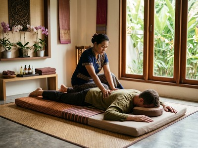
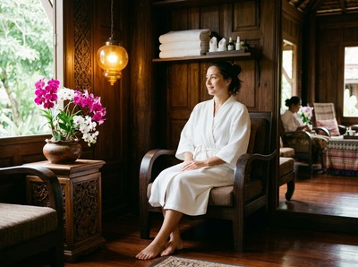

Partick is one of Glasgow's most characterful West End neighbourhoods, sitting on the north bank of the River Clyde with Kelvingrove Park to the east and the Riverside Museum to the west.
Thai massage in Partick is a search that reflects this area well: a community of professionals, students, and long-term residents who live actively, work hard, and are increasingly switched on to the idea that regular massage is a practical health decision, not an occasional indulgence. Serendipity Massage Therapy & Wellness, based in the heart of Glasgow City Centre, is well placed to serve anyone coming from Partick.
Partick draws a wide range of residents. The area around Dumbarton Road has long been a working community. It has grown in recent years, attracting young professionals and creatives drawn by its independent food scene and easy transport links.
Many Partick residents commute into the city centre each day. The same routes that take people to the office bring them straight to Serendipity's door on Hope Street.
Whether you're finishing a shift, stepping out of a meeting, or using a lunch break, the journey from Partick to Central Chambers is quick and simple.

At Serendipity, we work with clients who carry the physical effects of desk-bound days, demanding jobs, and the tension that builds when life doesn't slow down. Partick residents are no different.
A regular session can ease neck and shoulder tension from long commutes or screen time, support recovery from sport or gym work, and deliver the kind of mental reset that an evening on the sofa rarely provides. You can book your session online and choose a time that fits your week.
Our team of trained therapists offers a full range of massage treatments, each with specific therapeutic benefits. Thai massage is the foundation of everything we do at Serendipity. It combines assisted stretching, acupressure, and Sen line work, is performed fully clothed, and is available at soft or deep pressure. Alongside this, we offer:
Partick is one of Glasgow's best-connected neighbourhoods. Reaching Serendipity on Hope Street is simple from several directions. Partick station is a major transport hub, combining the Glasgow Subway with ScotRail's Argyle Line and North Clyde Line, plus numerous bus services.
The Subway from Partick station reaches Buchanan Street in around 10 minutes on the Inner Circle. From Buchanan Street station, Hope Street is a three-minute walk.
A ScotRail train from Partick reaches Glasgow Queen Street Low Level in about six minutes, with services every 15 minutes. From Queen Street, the walk to Central Chambers on Hope Street takes around five minutes.
Several bus services also connect the West End to the city centre. Whichever way you travel, the journey from Partick is well under 30 minutes door to door. Once you arrive, your appointment is waiting at Floor 1, Suite 50, Central Chambers, 93 Hope Street, G2 6LD.

Serendipity Massage Therapy & Wellness is a professional team practice, not a sole trader or a chain. Every therapist works to a consistent standard using techniques developed by head therapist Jariya Malone. These draw from traditional Thai massage practice and are designed to deliver precise, repeatable results in every session.
That consistency matters. Clients from Partick and across Glasgow's West End return to Serendipity not just because the first session helped, but because every visit delivers the same quality.
Sports massage for gym recovery, Swedish massage for those new to bodywork, and deep Thai oil massage for clients carrying long-standing tension — these are what the team delivers week in, week out.
Partick is one of Glasgow's oldest communities. Its roots stretch back to the 11th century, and it became a burgh in its own right before being absorbed into Glasgow in 1912.
The area is closely linked with Partick Thistle Football Club. As noted on Partick Thistle F.C. on Wikipedia, the club has not actually played in Partick since 1908, having moved to Firhill Stadium in Maryhill long ago.
That kind of civic identity — rooted in place even after the facts have shifted — says something about how strongly Partick holds onto its own character.
Serendipity is based at Central Chambers on Hope Street, G2 6LD, roughly two to three miles from Partick. The Subway takes around 10 minutes from Partick station to Buchanan Street, with a three-minute walk to our studio from there. By ScotRail train, you can reach Glasgow Queen Street Low Level in about six minutes, then walk five minutes to Hope Street. Either way, the total door-to-door journey is comfortably under 30 minutes.
The most popular option is the Glasgow Subway from Partick station, which connects to Buchanan Street on the Inner Circle in around 10 minutes. If you prefer the train, ScotRail services on the Argyle Line and North Clyde Line run from Partick to Glasgow Queen Street Low Level every 15 minutes and take about six minutes. Both options leave you a short, flat walk from our studio on Hope Street.
Yes. You can check availability and book your session online at any time. Same-day appointments are available subject to therapist availability, so it is worth checking early if you want to secure a slot. Evening appointments are also available for those travelling in after work.
Traditional Thai massage is a strong choice for desk workers. It combines assisted stretching with targeted acupressure to release neck, shoulder, and upper back tension that builds up from long periods of sitting. Thai oil massage is another effective option, using flowing strokes and deeper pressure to ease muscle tightness and support recovery. Our therapists are happy to discuss what will work best for you when you arrive.
Serendipity Massage Therapy & Wellness offers appointments across the working week, including early morning, lunchtime, and evening slots. These suit clients travelling in from Partick and the wider West End. The most up-to-date availability is shown when you book online. For specific enquiries, call us on 0141 673 6630 or email relax@serendipitymassage.co.uk.